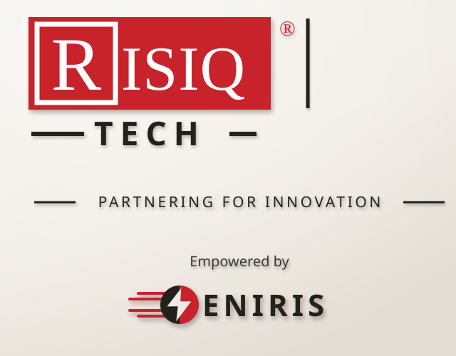

Certifying the batteries behind Ethiopia's electric future.
RISIQ EV Solutions is building the independent trust layer Ethiopia's EV market doesn't have yet — starting with a battery-health certificate every institution can rely on.
Part of RISIQ Group ↗ — a family-owned Ethiopian business group building since 2010.
A nation went electric — almost overnight.
In January 2024, Ethiopia became the first country on earth to ban the import of petrol and diesel cars — a ban since extended to knock-down kits and trucks. Here, EVs aren't a trend, they're the law: roughly 115,000 are on the road already, on the way to a 500,000-vehicle import target by 2030, powered by the Grand Ethiopian Renaissance Dam's low-cost hydropower.
Sources: IEA policy database · UNECA — Ethiopia National E-Mobility Strategy 2025–2030 · press reporting, 2024–2026.
The opening
Zero independent, multi-brand battery certifiers operate in East Africa today. The socket-measurement method needs no manufacturer's permission, so it works on the exact locked, imported EVs flooding Addis — and every certificate deepens a proprietary Ethiopian dataset (models, climate, duty cycles, degradation curves) that no foreign entrant can copy.
An electrical, tech & software company — with a European engine room.
RISIQ EV Solutions is an electrical engineering, technology and software company at heart. We build the measurement hardware, edge compute and cloud analytics that turn a single charge session into a certified, bankable number.
We do it in technology partnership with Eniris, one of Europe's leading energy-management-system (EMS) providers. Eniris is an international company headquartered in Belgium, with operations across the Netherlands, Switzerland, Sweden and Germany — its SmartgridOne platform manages energy assets across more than 150,000 installations through 500+ vendor-independent hardware integrations.
RISIQ's founder held an executive position at Eniris before returning to Addis Ababa to build RISIQ, and that relationship continues today as an active, contractual technology partnership — giving RISIQ direct access to European-grade energy engineering from day one.

Why the Eniris partnership matters
Precision energy measurement and management is a solved engineering problem in Europe. RISIQ doesn't reinvent it — it brings that proven engineering discipline to a market no European EMS company has built for: Ethiopia's locked, imported EV fleet.
See who builds what →An operator at the crossroads of energy, engineering & Ethiopia.
Abdulfetah Khalid
Founder & CEO
Electrical Engineering, Aalto University · Executive MBA, Antwerp Management School.
Built automotive and juice-manufacturing companies from the ground up in Addis Ababa as part of the family behind RISIQ Group, then held an executive position at Eniris — a leading European EMS provider — before returning home to found RISIQ EV Solutions.
The rare mix of deep-tech engineering, hard-won Ethiopian operating experience, and a live network across banks, importers and fleets.
"This is a market that rewards people who can build hard things locally. That is exactly the job I have done before."
Three engineers, three layers, one certificate.
A certificate is only as good as the rig that measured it, the service that computed it and the endpoint that still answers when someone scans the QR code two years later. Each of those layers has an owner.
Natnael Abu
Embedded Engineer
Electrical Engineering · Debre Markos University
Owns the rig. Meter integration and calibration, the 1 Hz sampling firmware on the charge path, charge control, and the local buffer that keeps a test valid when the network drops mid-session.
Ikram Awol
Backend Engineer
Software Engineering · Addis Ababa University
Owns the certification platform. Telemetry ingestion, the State-of-Health computation service and its quality gates, certificate signing, and the registry every issued certificate is checked against.
Anteneh Addisu
DevOps & Infrastructure Engineer
Software Engineering · Addis Ababa University
Owns the infrastructure. Deployment, monitoring and the uptime of the public verification endpoint — the address every scanned QR code resolves to, which has to answer for the life of the certificate.
The team is Ethiopian, based in Addis, and building for Ethiopian conditions — intermittent connectivity, locked imports, and institutions that need a document rather than a dashboard.
Counsel from two of Ethiopia's most connected operators.
RISIQ has had, and continues to have, the guidance of two seasoned advisors spanning venture-building and banking.
Addis Alemayehou
Founder, Kazana Fund & 251 Communications
Chairman of Kazana Group and General Partner at Kazana Fund, one of Ethiopia's leading venture platforms backing early-stage African founders. Founder of 251 Communications, a leading Addis Ababa communications and marketing agency, and co-founder of KANA TV. Sits on the boards of the African Leadership Network and the Ethiopian American Business Forum.
Mesfin Bezu
Vice President, Dashen Bank
A senior executive at Dashen Bank, one of Ethiopia's largest private commercial banks, with leadership experience spanning interest-free banking and bank-wide strategy. Brings a deep, practitioner's view of Ethiopian lending, collateral and risk practice — exactly the perspective RISIQ needs to build a certificate banks will underwrite against.
Prototype-stage — with a clear road to a national standard.
RISIQ is currently assembling the first certification rig and forming founding pilot partnerships. The backend certification platform ships with the pilot. Here's the delivery plan.
Rig & first measurements
Certification rig assembled — precision meter, edge compute, charge control — and controlled charge data flowing from a first Addis site.
Ground-truth SoH
Measured capacity and State-of-Health from full-window reference tests, with quality gates — the accuracy benchmark everything else is validated against.
The 15-minute fast test
Partial-window fast testing and a per-model catalogue of the vehicles actually on Ethiopian roads.
AI on the Ethiopian dataset
Machine-learning models trained on our own reference tests, with per-model accuracy validated before certificates tighten their confidence bands.
Scale & moat
Deployment to local workshops and importer yards, a bank-grade certificate in circulation, and a proprietary dataset competitors can't replicate.
Pilot ready — late October 2026
The 90-day Addis pilot is on track to go live in late October 2026. Founding partners and early investors join on preferential terms while the first Ethiopian battery dataset is still being written.
Together.
Talk to us about the 90-day certification pilot going live in Addis Ababa, late October 2026.